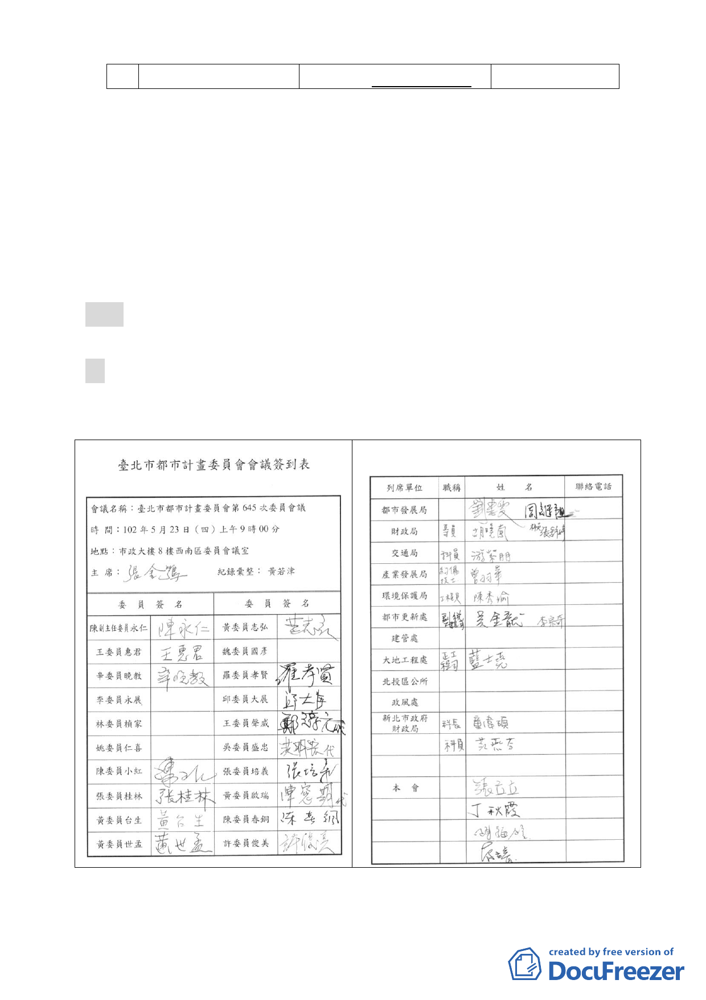

簷人行道，詳圖
4
。 行道，詳圖
4-1
、圖
4-2
。
七、本案市府
102
年
4
月
15
日以府都新字第
10230201700
號函送
到會。
八、申請單位：臺北市政府（財政局）。
九、辦理單位：臺北市政府。
十、法令依據：都市計畫法第
66
條；都更條例第
5
條、第
6
條
第
1
項第
4
款、第
8
條。
決議：本案退回。將來如確需變更都市計畫再依法定程序辦理。
肆、散會。（
10
時
40
分）
- 18 -